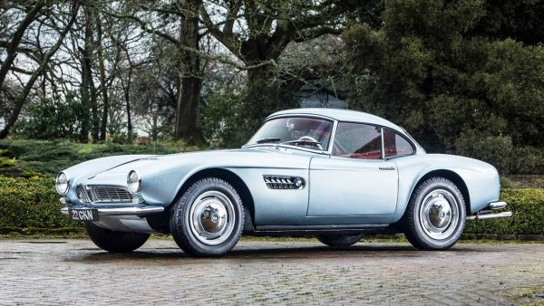
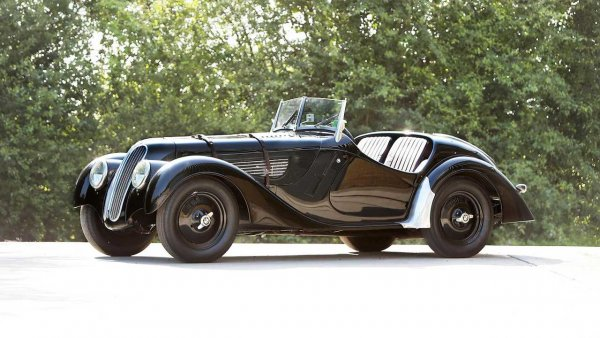
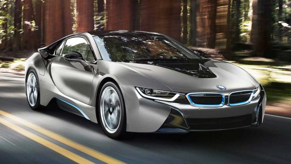

BMW 507 (1957) - 4 194 422 евро

-
Стигнахме до най-скъпия представител на баварската марка - BMW 507.
Всъщност, този особен на фона на всички останали модели на компанията не може да бъде намерен за по-малко от два милиона евро.
Следователно, не е изненадващо, че за екземпляра от 1957 г.,
което в продължение на 60 години бе собственост на шампиона от Формула 1 Джон Съртис, през 2018 г. бяха платени 4 194 422 евро на търг.
Под капака на двувратката има 3,2-литров V8 с мощност 150 коня, който ускорява роудстъра до 220 км/ч.
Между другото, този модел също е много рядък - от него са произведени едва 252 бройки.
BMW 328 Roadster (1937) - 901 475 евро

-
Втора позиция е за още едно BMW 328. Този път във формата на класически роудстър от 30-те години.
Такъв двуместен състезателен автомобил е Светият Граал за колекционерите.
В крайна сметка това е входен билет за най-важните частни партия на заможните фенове на ретро колите.
Показаният на снимката великолепен BMW 328 Roadster от 1937 г. с номер на шасито 85095 и редови "шестак" с мощност 80 коня,
бе продаден на търг през 2014 година за 901 475 евро - абсолютен рекорд за модела.
BMW i8 Concours d'Elegance Edition (2014) - 764 000 евро

-
За да пуснат новия моден спортен хибрид BMW i8 на американския пазар,
баварците представиха негово специално изпълнение на Конкурса за елегантност в Пебъл Бийч през август 2014 г.
Създадената за този повод двувратка бе наречена i8 Concours d'Elegance Edition.
И за нея платиха невероятните 764 000 евро на търг - шест пъти повече от цената на обикновен i8.
Между другото, цялата сума от продажбата бе дарена за благотворителност. Най-интересното е обаче,
че в този адски скъп хибрид с мощност 262 коня и максимална скорост от 250 км/ч, нямаше нищо свръхестествено.
Автомобилът беше боядисан в специалния цвят Frozen Grey Metallic, а в салона имаше кожа Dalbergia Brown с контрастен шев,
както и табелки и други отличителни за рядката версия знаци.
↑↑↑